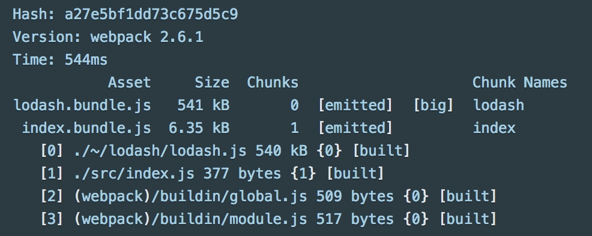

现代前端开发 - Webpack
Webpack
Webpack是什么?
Webpack是一个现代化的打包模块化JavaScript的工具, 在Webpack中一切皆模块, 通过Loader转换文件, 通过Plugin注入钩子, 最后输出多个模块组合成的文件.
Webpack是当前最主流的工程化工具, 借助庞大的生态系统, 提供了开发/构建/生产环境下的辅助功能.
https://webpack.js.org/
Webpack的优点
- 专注于处理模块化项目, 能够开箱即用, 一步到位
- 可通过Plugin扩展, 完整好用又不失灵活
- 使用场景不局限于Web开发
- 社区庞大活跃
- 具备良好的开发体验
安装Webpack
Webpack只作为构建工具, 不会出现在最终的运行环境中, 所以它的安装方式有两种: 全局安装或本地安装
全局安装
全局安装后, webpack可以作为本地应用被执行
$ npm i -g webpack
本地安装
$ npm i --save-dev webpack
Webapck被安装到项目的开发态依赖中, 相对于全局安装, 本地安装便于管理多版本的Webpack, 避免相互干扰
在实际使用时, 通常将webpack命令配置到package.json文件中, 通过npm命令来执行
// package.json
"scripts": {
"webpack": "webpack --config webpack.config.js"
},
运行时, 执行如下命令:
$ npm run webpack
在实际使用时, 可能会根据不同的使用场景包含更多的命令配置.
Getting Started
https://webpack.js.org/guides/getting-started/
原始的项目组织方式
- 初始化基本的html和js文件

- index.html - 暂时在html中手动引入lodash依赖(通过这种传统方式管理js依赖，导致依赖混乱、难以维护、并且需要客户端下载多余的内容)
<html>
<head>
<title>Getting Started</title>
<script src="https://unpkg.com/lodash@4.16.6"></script>
</head>
<body>
<script src="./src/index.js"></script>
</body>
</html>
- src/index.js - 简单创建div元素, 利用lodash函数拼接内容, 显示在页面上
function component() {
var element = document.createElement('div');
// Lodash, currently included via a script, is required for this line to work
element.innerHTML = _.join(['Hello', 'webpack'], ' ');
return element;
}
document.body.appendChild(component());
使用Webpack进行打包
- 创建dist目录放置我们最终的发布文件, 将index.html移动到dist目录中 (同样是临时步骤, 避免开始时过于复杂, 这部分操作应该是工具自动完成的)
- 修改index.js中的内容，通过es6的导入语法来引入lodash
import _ from 'lodash';
function component() {
var element = document.createElement('div');
element.innerHTML = _.join(['Hello', 'webpack'], ' ');
return element;
}
document.body.appendChild(component());
- 修改index.html中的引用，删掉lodash的直接引入，将index.js的引入修改为即将生成的打包文件bundle.js
<html>
<head>
<title>Getting Started</title>
</head>
<body>
<script src="./bundle.js"></script> <!-- 即将由工具生成的打包结果文件 -->
</body>
</html>
- 手动执行webpack打包命令，生成bundle.js
$ webpack src/index.js dist/bundle.js

- 在上述打包过程中, 以index.js为入口, 将index.js和它import进来的lodash一起打包为dist/bundle.js, 在index.html中已经手动引入了结果文件, 最终dist目录下的文件就是最终的构建结果
使用配置文件
通常情况下，我们的打包过程会更加复杂，需要单独的配置文件进行管理。 包括入口, 输出结果, 其他资源文件的加载, 插件扩展等等
- 在项目根目录创建webpack.config.js, 在配置文件中目前只包含入口和构建结果配置
const path = require('path');
module.exports = {
entry: './src/index.js',
output: {
filename: 'bundle.js',
path: path.resolve(__dirname, 'dist')
}
};
path是nodejs自带的工具包, 用于处理路径, __dirname表示配置文件所在的绝对路径, 与命令的执行路径无关, 所以 path.resolve(__dirname, 'dist') 就表示项目根目录下的dist目录
- 运行命令执行打包, 通过
--config指定配置文件
$ webpack --config webpack.config.js
Asset Management
使用webpack加载样式、图片、字体等内容。
webpack使用动态绑定的方式，按需加载所需要的资源, 从入口文件开始, 递归检索引入的资源.
Loading CSS
- 添加styles.css文件
.hello {
color: red;
}
- index.js文件中引入styles.css，以便webpack可以根据import语句加载样式
- index.js中给element添加class属性，使样式生效
import _ from 'lodash';
import './styles.css'; // 引入css文件
function component() {
var element = document.createElement('div');
element.innerHTML = _.join(['Hello', 'webpack'], ' ');
element.classList.add('hello'); // 添加class
return element;
}
document.body.appendChild(component());
- css文件并不是webpack原生支持的模块, 这就需要借助loader, 将css文件转化为内存中的JavaScript模块
- 首先安装加载样式文件的loader
$ npm i --save-dev style-loader css-loader
- 修改webpack的配置文件，将css文件使用对应的loader进行加载
const path = require('path');
module.exports = {
entry: './src/index.js',
output: {
filename: 'bundle.js',
path: path.resolve(__dirname, 'dist')
},
module: {
rules: [
{
test: /\.css$/,
use: [
'style-loader',
'css-loader'
]
}
]
}
};
- module中添加css文件的加载规则
- 通过test配置的正则表达式匹配对应的文件
- 使用style-loader和css-loader处理样式文件(执行顺序是数组的倒序)- 执行webpack打包，样式文件被加载到打包结果bundle.js中:
Loading Sass
https://webpack.js.org/loaders/sass-loader/
对于Webpack来说, Sass和Css并没有本质上的区别, 只是需要额外的Loader来将Sass转化为JavaScript模块
- 安装sass-loader
$ npm i --save-dev sass-loader node-sass
- 添加rules加载sass
{
test: /\.scss$/,
use: [
'style-loader',
'css-loader',
'sass-loader'
]
}
- 将styles改写为scss格式(将style.css改名为style.scss), 并在index.js中引入sass文件
import './styles.scss'; // 引入scss文件
- 执行webpack进行打包
引入Bootstrap
- 安装bootstrap v4
$ npm i --save bootstrap@next
bootstrap会在运行时生效, 所以使用--save参数来安装
- 在styles.scss中引入bootstrap，为了正确使用bootstrap提供的各种变量和宏，引入scss源文件
@import '~bootstrap/scss/bootstrap';
.hello {
color: $red;
}
- 修改index.js文件，增加bootstrap的container
element.classList.add('container')
element.classList.add('hello')
- 打包并查看结果

Loading Images
- 安装file-loader来加载图片文件
$ npm i --save-dev file-loader
- 添加rules来处理图片
{
test: /\.(png|svg|jpg|gif)$/,
use: [
'file-loader'
]
}
- 在项目中添加一些图标文件
- 默认情况下，没有使用的图片不会被打包，需要在js用引入、在css中使用或者在html中加载
.hello {
color: $red;
background-image: url('./tile-wide.png');
}
- 执行打包，文件被复制并重命名，样式中的引用被自动替换

压缩图片
图片在打包过程中，通常需要进行压缩处理
- 打包前:

- 安装image-webpack-loader
$ npm i --save-dev image-webpack-loader
- 修改rule配置
{
test: /\.(png|svg|jpg|gif)$/,
use: [
'file-loader',
{
loader: 'image-webpack-loader',
options: {
bypassOnDebug: true,
},
},
]
}
- 执行打包，文件从139k压缩到37k

Loading fonts
- 使用file-loader加载字体文件
{
test: /\.(woff|woff2|eot|ttf|otf)$/,
use: [
'file-loader'
]
}
- 下载字体并修改样式文件
@import '~bootstrap/scss/bootstrap';
@font-face {font-family: "DuperWeb W03 Italic";
src: url("./fonts/32614b2a79096b7abe08dce827de3d8f.eot"); /* IE9*/
src: url("./fonts/32614b2a79096b7abe08dce827de3d8f.eot?#iefix") format("embedded-opentype"), /* IE6-IE8 */
url("./fonts/32614b2a79096b7abe08dce827de3d8f.woff2") format("woff2"), /* chrome、firefox */
url("./fonts/32614b2a79096b7abe08dce827de3d8f.woff") format("woff"), /* chrome、firefox */
url("./fonts/32614b2a79096b7abe08dce827de3d8f.ttf") format("truetype"), /* chrome、firefox、opera、Safari, Android, iOS 4.2+*/
url("./fonts/32614b2a79096b7abe08dce827de3d8f.svg#DuperWeb W03 Italic") format("svg"); /* iOS 4.1- */
}
.hello {
font-family: 'DuperWeb W03 Italic';
}
- 执行打包，字体被加载到输出目录

Loading Data
- 安装csv-loader和xml-loader
$ npm i --save-dev csv-loader xml-loader
- 创建用于测试的xml文件
<?xml version="1.0" encoding="UTF-8"?>
<note>
<to>Mary</to>
<from>John</from>
<heading>Reminder</heading>
<body>Call Cindy on Tuesday</body>
</note>
- js文件中import文件并打印内容
import _ from 'lodash';
import './styles.scss';
import data from './data.xml'
function component() {
var element = document.createElement('div');
element.innerHTML = _.join(['Hello', 'webpack'], ' ');
element.classList.add('container')
element.classList.add('hello')
console.log(data);
return element;
}
document.body.appendChild(component());
- 执行打包，查看输出结果(xml文件内容被内联到js脚本中)

Output Management
目前为止，我们是通过手动引入的方式在维护index.html中的引用。随着项目的增大，会将文件分为多个bundle输出，而且需要增加hash，自动维护index.html中的更新。
- 新增一个print.js文件，当点击页面按钮的时候，在控制台打印信息
export default function print() {
console.log('I am pringting message');
}
- index.js中新增按钮，点击时调用print的方法
var btn = document.createElement('button')
btn.classList.add('btn')
btn.classList.add('btn-primary')
btn.innerHTML = 'Click me and check the console!';
btn.onclick = printMe;
element.appendChild(btn)
- 分为两个包输出打包结果，修改webpack配置文件
entry: {
app: './src/index.js',
print: './src/print.js'
},
output: {
filename: '[name].js',
path: path.resolve(__dirname, 'dist')
},
entry中通过配置对象的key值拆分为app和print两个结果包
filename: '[name].js'中的[name]是Webpack内置的变量, name会被替换为app和print
- 执行打包后, 会自动拆分为两个包

- 但是我们需要手动修改index.html文件，来引入新生成的js文件
<body>
<script src="./print.js"></script>
<script src="./app.js"></script>
</body>
使用HtmlWebpackPlugin管理html文件
- 安装依赖
$ npm i --save-dev html-webpack-plugin
- webpack配置中添加插件
plugins: [
new HtmlWebpackPlugin({
title: 'Output Management'
})
]
- 执行打包后，自动生成index.html，并且自动引入bundle文件，并且根据配置项自动生成了title
<!DOCTYPE html>
<html>
<head>
<meta charset="UTF-8">
<title>Output Management</title>
</head>
<body>
<script type="text/javascript" src="app.js"></script>
<script type="text/javascript" src="print.js"></script>
</body>
</html>
清理 /dist 文件夹
每次我们执行打包的时候，dist中的文件没有清除，如果是同名会覆盖，但是其他文件会被遗留下来，通过插件来进行自动清理。
- 安装依赖
$ npm i --save-dev clean-webpack-plugin
- 配置webpack插件
plugins: [
new CleanWebpackPlugin('./dist'),
new HtmlWebpackPlugin({
title: 'Output Management'
})
]
- 执行打包，可以看到控制台输出，而且在ide中也能看到目录有被清空的过程
$ webpack --config webpack.config.js
clean-webpack-plugin: /Users/yangxu/Documents/projects/demo/webpack-study/dist has been removed.
生成Manifest文件
webpack通过一个manifest文件来记录那些文件已经被打包，避免重复生成。可以通过插件来将manifest生成为独立的json文件，以便我们探索webpack的生成过程。
- 安装依赖
$ npm i --save-dev webpack-manifest-plugin
- 配置插件
plugins: [
new ManifestPlugin(),
]
- 执行打包，生成manifest文件
{
"32614b2a79096b7abe08dce827de3d8f.eot": "411ad8ba151412a129561712cfd5b33e.eot",
"32614b2a79096b7abe08dce827de3d8f.svg": "677433a0892aaed7b7d2628c313c9775.svg",
"32614b2a79096b7abe08dce827de3d8f.ttf": "32614b2a79096b7abe08dce827de3d8f.ttf",
"32614b2a79096b7abe08dce827de3d8f.woff": "60500f8ba55a33b536b53d982a6bbd36.woff",
"32614b2a79096b7abe08dce827de3d8f.woff2": "b78cdd1b72a799e280936eb369d94538.woff2",
"app.js": "app.bundle.js",
"print.js": "print.bundle.js"
}
完整的配置文件
const path = require('path');
const HtmlWebpackPlugin = require('html-webpack-plugin')
const CleanWebpackPlugin = require('clean-webpack-plugin')
const ManifestPlugin = require('webpack-manifest-plugin')
module.exports = {
entry: {
app: './src/index.js',
print: './src/print.js'
},
devtool: 'inline-source-map',
devServer: {
contentBase: './dist'
},
output: {
filename: '[name].bundle.js',
path: path.resolve(__dirname, 'dist')
},
module: {
rules: [
{
test: /\.css$/,
use: [
'style-loader',
'css-loader'
]
},
{
test: /\.scss$/,
use: [
'style-loader',
'css-loader',
'sass-loader'
]
},
{
test: /\.(png|svg|jpg|gif)$/,
use: [
'file-loader',
{
loader: 'image-webpack-loader',
options: {
bypassOnDebug: true,
},
},
]
},
{
test: /\.(woff|woff2|eot|ttf|otf)$/,
use: [
'file-loader'
]
},
{
test: /\.(csv|tsg)$/,
use: [
'csv-loader'
]
},
{
test: /\.xml$/,
use: [
'xml-loader'
]
}
]
},
plugins: [
new ManifestPlugin(),
new CleanWebpackPlugin('./dist'),
new HtmlWebpackPlugin({
title: 'Output Management'
})
]
};
关键概念
Webpack的工作流程主要围绕着几个关键概念:
-
Entry - 指示 webpack 应该使用哪个模块，来作为构建其内部依赖图的开始。进入入口起点后，webpack 会找出有哪些模块和库是入口起点（直接和间接）依赖的。
-
Output - 告诉 webpack 在哪里输出它所创建的 bundles，以及如何命名这些文件。
-
Loaders - 让 webpack 能够去处理那些非 JavaScript 文件（webpack 自身只理解 JavaScript）。loader 可以将所有类型的文件转换为 webpack 能够处理的有效模块，然后你就可以利用 webpack 的打包能力，对它们进行处理。
-
Plugins - loader 被用于转换某些类型的模块，而插件则可以用于执行范围更广的任务。插件的范围包括，从打包优化和压缩，一直到重新定义环境中的变量。
开发
使用 source map
当文件被打包后，如果执行过程中出现错误，浏览器会指向到bundle文件，难以定位具体位置，通过启用sourcemap，来帮助我们日常开发中的快速定位。
在配置文件中加入一行:
devtool: 'inline-source-map',
重新打包后，刷新页面，可以看到控制台信息指向了实际的源码位置，Source页签中也能看到源码信息。以及断点调试功能。
选择一个开发工具
每次要编译代码时，手动运行 npm run build 就会变得很麻烦。
webpack 中有几个不同的选项，可以帮助你在代码发生变化后自动编译代码：
- Watch Mode - 通过命令行参数开启, 只监控文件 变化并自动打包 , 不会自动刷新浏览器
"watch": "webpack --watch",
- webpack-dev-server - webpack工具, 独立安装并执行后, 可以提供自动打包/刷新/HMR等功能
$ npm i --save-dev webpack-dev-server
// webpack.config.js
devServer: {
contentBase: './dist'
},
// package.json
"start": "webpack-dev-server --open",
- webpack-dev-middleware - 作为express的中间件, 在webpack-dev-server内部是集成了一个server进程，监听文件变化并自动刷新。 这部分能力可以被独立为webpack-dev-middleware，需要创建一个server.js文件，并通过node启动
// server.js
const express = require('express');
const webpack = require('webpack');
const webpackDevMiddleware = require('webpack-dev-middleware');
const app = express();
const config = require('./webpack.config.js');
const compiler = webpack(config);
// Tell express to use the webpack-dev-middleware and use the webpack.config.js
// configuration file as a base.
app.use(webpackDevMiddleware(compiler, {
publicPath: config.output.publicPath
}));
// Serve the files on port 3000.
app.listen(3000, function () {
console.log('Example app listening on port 3000!\n');
});
$ node server.js
Hot Module Replacement(模块热替换)
模块热替换(Hot Module Replacement 或 HMR)是 webpack 提供的最有用的功能之一。它允许在运行时更新各种模块，而无需进行完全刷新。
HMR 不适用于生产环境，这意味着它应当只在开发环境使用
https://doc.webpack-china.org/guides/hot-module-replacement/
- 修改配置文件，启用webpack-dev-server内置的hmr能力

- index.js 文件，以便当 print.js 内部发生变更时可以告诉 webpack 接受更新的模块。

- 样式文件的HMR已经集成在style-loader内部, 只需要修改样式便会自动生效
-
在上面例子中可以看到, 想要开启HMR除了需要引入工具, 同样需要在代码中注入判断逻辑, 这本身不符合工具的使用方式, 而在一些广泛使用的框架中, 存在大量的loader集成了框架的HMR处理, 这也是我们使用框架进行开发的重要原因
- React Hot Loader：实时调整 react 组件。
- Vue Loader：此 loader 支持用于 vue 组件的 HMR，提供开箱即用体验。
- Elm Hot Loader：支持用于 Elm 程序语言的 HMR。
- Redux HMR：无需 loader 或插件！只需对 main store 文件进行简单的修改。
- Angular 没有必要使用 loader！只需对主要的 NgModule 文件进行简单的修改，由 HMR API 完全控制。
HMR的作用
- 保留当前页面状态，避免整体刷新后丢失
- 节省开发时间
- 实时看到样式变化
How It Works
https://doc.webpack-china.org/concepts/hot-module-replacement/
通过不同的视角来解释HMR是如何工作的:
- 应用程序让HMR去检查更新
- HMR异步下载更新并通知应用程序
- 应用程序让HMR去提交更新
- HMR同步刷新变更内容
当文件发生变化后，会更新两部分内容:
- manifest文件
- 构建结果文件
manifest中的hash码会发生变化，webpack通过文件id和hash发现文件的更新。
HMR是一个可选的功能，仅仅对于包含HMR代码(accept)的模块生效。例如style-loader中的实现，发生变化后，通过HMR的api来替换旧内容。
在模块的运行时，会有额外的代码被加入，用来监听模块的父模块和子模块。包含check和apply两个方法。
check方法会发起HTTP请求，校验manifest文件，如果没有更新，请求会失败。如果请求成功，更新后的chunks会被下载。
当所有文件下载完成后，运行时会切换到ready状态，准备替换所有更新。
apply方法先将所有需要更新的模块状态设置为invalid，在每个需要更新的模块中，需要在他自身或者他的父模块中，包含handler处理，否则更新事件不会生效。
如果事件始终没有被捕获，通过entry流出，更新过程失败。
如果事件被某个模块的handler捕获并更新，这个模块以及依赖他的子模块都会进行刷新。
当所有的过期模块都被处理完成后，运行时会切换回idle状态，应用继续使用。
Tree Shaking
tree shaking 是一个术语，通常用于描述移除 JavaScript 上下文中的未引用代码(dead-code)。它依赖于 ES2015 模块系统中的静态结构特性，例如 import 和 export。这个术语和概念实际上是兴起于 ES2015 模块打包工具 rollup。
Tree Shaking可以主要用于生产环境的打包构建, 可以将应用程序想象成一棵树。绿色表示实际用到的源码和 library，是树上活的树叶。灰色表示无用的代码，是秋天树上枯萎的树叶。为了除去死去的树叶，你必须摇动这棵树，使它们落下。
主要作用是减少应用的体积, 提高应用加载速度, 提高用户体验
https://doc.webpack-china.org/guides/tree-shaking/
添加一个通用模块
- 添加一个简单的计算函数模块
export function square(x) {
return x * x;
}
export function cube(x) {
return x * x * x;
}
- 在index.js中调用其中一个方法
element.innerHTML = _.join(['Hello', 'webpack', '5 cubed is equal to ' + cube(5)], ' ');
- square方法是没有被使用的，但是也会被打包到最后的结果中，导致整体包的 体积被撑大 , 特别是在项目规模增大或者使用三方件的时候, 会导致产品体积增大, 影响加载速度
- 在打包结果中, square方法被标记为 未使用 , 但是webpack自身不会将其剔除, 需要借助其他工具将无用代码删除
精简输出
$ npm install --save-dev uglifyjs-webpack-plugin
然后将其添加到我们的配置中：

执行打包后，不仅多余的square方法被移除，而且打包结果被混淆压缩，在实际应用中会大大缩减包的体积
警告
请注意，webpack 本身并不会执行 tree-shaking。它需要依赖于像 UglifyJS 这样的第三方工具来执行实际的未引用代码(dead code)删除工作。有些情况下，tree-shaking 可能不会生效。例如，考虑以下模块：

生产环境构建
开发环境(development)和生产环境(production)的构建目标差异很大。
- 在开发环境中，我们需要具有强大的、具有实时重新加载(live reloading)或热模块替换(hot module replacement)能力的 source map 和 localhost server。
- 在生产环境中，我们的目标则转向于关注更小的 bundle，更轻量的 source map，以及更优化的资源，以改善加载时间。
由于要遵循逻辑分离，我们通常建议为每个环境编写彼此独立的 webpack 配置。
遵循不重复原则(Don't repeat yourself - DRY)，保留一个“通用”配置。为了将这些配置合并在一起，将使用一个名为 webpack-merge 的工具。
$ npm install --save-dev webpack-merge
配置文件分解为common、dev、prod三份，通过webpack-merge进行合并

// webpack.common.js
const path = require('path');
const HtmlWebpackPlugin = require('html-webpack-plugin')
const CleanWebpackPlugin = require('clean-webpack-plugin')
const webpack = require('webpack')
module.exports = {
entry: {
app: './src/index.js'
},
output: {
filename: '[name].bundle.js',
path: path.resolve(__dirname, 'dist')
},
module: {
rules: [
{
test: /\.css$/,
use: [
'style-loader',
'css-loader'
]
},
{
test: /\.(png|svg|jpg|gif)$/,
use: [
'file-loader',
{
loader: 'image-webpack-loader',
options: {
bypassOnDebug: true,
},
},
]
}
]
},
plugins: [
new CleanWebpackPlugin('./dist'),
new HtmlWebpackPlugin({
title: 'Output Management'
}),
]
};
// webpack.dev.js
const ManifestPlugin = require('webpack-manifest-plugin')
const webpack = require('webpack')
const merge = require('webpack-merge');
const common = require('./webpack.common.js');
module.exports = merge(common, { // 合并公共配置
devtool: 'inline-source-map',
devServer: {
contentBase: './dist',
hot: true
},
plugins: [
new ManifestPlugin(),
new webpack.NamedModulesPlugin(),
new webpack.HotModuleReplacementPlugin()
]
})
// webpack.prod.js
const UglifyJSPlugin = require('uglifyjs-webpack-plugin');
const merge = require('webpack-merge');
const common = require('./webpack.common.js');
module.exports = merge(common, {
plugins: [
new UglifyJSPlugin(),
]
})
把 scripts 重新指向到新配置。我们将 npm start 定义为开发环境脚本，并在其中使用 webpack-dev-server，将 npm run build 定义为生产环境脚本：
// package.json
"scripts": {
"start": "webpack-dev-server --open --config webpack.dev.js",
"build": "webpack --config webpack.prod.js"
},
source map
webpack官方鼓励在生产环境中启用 source map，因为它们对调试源码(debug)和运行基准测试(benchmark tests)很有帮助。

避免在生产中使用 inline- 和 eval-，因为它们可以增加 bundle 大小，并降低整体性能。
指定环境变量
很多的库会检查process.env.NODE_ENV变量的值来区分生产环境和开发环境。
不同的设置会导致不同的处理方式。
如果每次都通过命令行传递，不便于开发人员使用。
可以通过内置的 DefinePlugin 配置到prod两个文件内。
const webpack = require('webpack')
const UglifyJSPlugin = require('uglifyjs-webpack-plugin');
const merge = require('webpack-merge');
const common = require('./webpack.common.js');
module.exports = merge(common, {
plugins: [
new UglifyJSPlugin(),
new webpack.DefinePlugin({
'NODE_ENV': JSON.stringify('production')
})
]
})
在程序源码中，可以通过如下代码处理生产环境的逻辑:
if (process.env.NODE_ENV !== 'production') {
console.log('Looks like we are in development mode!');
}
代码分离
https://doc.webpack-china.org/guides/code-splitting/
代码分割是webpack的关键能力，可以帮助我们将应用打包到多个chunk中，便于我们更好的控制加载过程、提高应用的加载速度。
- 可以按需加载或并行加载这些文件
- 可以用于获取更小的 bundle
- 可以控制资源加载优先级，如果使用合理，会极大影响加载时间。
有三种方式帮助我们进行分割:
- Entry Points: 通过entry进行手动分割.
- Prevent Duplication: 使用CommonsChunkPlugin提取重复的chunk.
- Dynamic Imports: 在模块中通过内联方法分割.
Entry Points
最简单的分割方式, 在entry中配置不同的bundle入口:
- 项目结构如下
- another-module.js
import _ from 'lodash';
console.log(
_.join(['Another', 'module', 'loaded!'], ' ')
);
- webpack配置如下
const path = require('path');
const HTMLWebpackPlugin = require('html-webpack-plugin');
module.exports = {
entry: {
index: './src/index.js',
another: './src/another-module.js'
},
plugins: [
new HTMLWebpackPlugin({
title: 'Code Splitting'
})
],
output: {
filename: '[name].bundle.js',
path: path.resolve(__dirname, 'dist')
}
};
- 在执行打包后, 拆分为两个bundle
这种方法存在的缺点是:
- 多个chunk之间的重复引入没有处理, 两者都包含的公共模块的重复打包
- 不够灵活，不能根据代码的结构进行动态调整, 新增分支需要手动修改配置文件
防止重复(prevent duplication)
CommonsChunkPlugin 插件可以将公共的依赖模块提取到已有的入口 chunk 中，或者提取到一个新生成的 chunk。
const path = require('path');
const webpack = require('webpack');
const HTMLWebpackPlugin = require('html-webpack-plugin');
module.exports = {
entry: {
index: './src/index.js',
another: './src/another-module.js'
},
plugins: [
new HTMLWebpackPlugin({
title: 'Code Splitting'
}),
new webpack.optimize.CommonsChunkPlugin({
name: 'common' // 指定公共 bundle 的名称。
})
],
output: {
filename: '[name].bundle.js',
path: path.resolve(__dirname, 'dist')
}
};
CommonsChunkPlugin 插件将lodash分离到单独的 chunk，并且将其从 main bundle 中移除，减轻了大小。
其他一些对于代码分离很有帮助的插件和 loaders：
- ExtractTextPlugin: 用于将 CSS 从主应用程序中分离。
- bundle-loader: 用于分离代码和延迟加载生成的 bundle。
- promise-loader: 类似于 bundle-loader ，但是使用的是 promises。
动态导入(dynamic imports)
借助ES2015的import()语法来标识动态加载。

Bundle Analysis
分割代码后，可以通过工具来分析包的划分
官方分析工具 http://webpack.github.io/analyse
- webpack-chart: Interactive pie chart for webpack stats.
- webpack-visualizer: Visualize and analyze your bundles to see which modules are taking up space and which might be duplicates.
- webpack-bundle-analyzer: A plugin and CLI utility that represents bundle content as convenient interactive zoomable treemap.

Lazy Loading
延迟加载或者称作按需加载，在应用中通过逻辑来控制加载点。使得应用程序的初始化速度提高，带来更好的用户体验。
我们希望默认不加载print.js的包，当点击按钮的时候，才去动态加载，修改index.js中的逻辑:
btn.onclick = e => import(/* webpackChunkName: "print" */ './print').then(module => {
const printMe = module.default
printMe()
});
注意在webpack配置中，需要将print从entry中移除，否则会打包并在index.html中引入 output中需要给出chunk的命名规则，否则是按照数字id进行命名
entry: {
app: './src/index.js'
},
output: {
filename: '[name].bundle.js',
chunkFilename: '[name].bundle.js',
path: path.resolve(__dirname, 'dist')
},
Caching
当应用被打包发布的时候，会使用dist目录下的内容，客户端访问应用时，会加载dist目录下的资源。
为了加快访问速度和节省带宽，浏览器会使用缓存技术减少不必要的下载。
我们可以借助webpack的配置和各种插件，来帮助浏览器识别未改变的文件。
Output Filenames
在output中，通过[chunkhash]命名文件
output: {
filename: '[name].[chunkhash].js',
chunkFilename: '[name].[chunkhash].js',
path: path.resolve(__dirname, 'dist')
},
执行打包后发现，文件名中，追加了基于内容计算出来的hash码，当文件没有发生变化时，文件名保持不变。

Extracting Boilerplate
借助 CommonsChunkPlugin 的帮助，将相对稳定的部分独立打包，尽量保持这个包的稳定，我们会:
- 提取webpack附加的代码模板
- 提取三方件
entry: {
app: './src/index.js',
vender: [
'lodash'
]
},
plugins: [
new webpack.optimize.CommonsChunkPlugin({
name: 'vender'
}),
new webpack.optimize.CommonsChunkPlugin({
name: 'runtime'
}),
]
- runtime需要给定一个，在entry中 没有出现过的 名字，插件会自动提取webpack的附加内容
- vender中包含三方件，并且插件配置 要在runtime之前
Module Identifiers
首先记录我们之前的打包结果:
print.575c0ed73ad5b58a2eb7.js 194 bytes 0 [emitted] print
app.7383f6a1b5ac5b35d5eb.js 157 kB 1 [emitted] app
vender.63e9981a8673418b3140.js 70.8 kB 2 [emitted] vender
runtime.1abd54b5b199a2033d70.js 1.48 kB 3 [emitted] runtime我们删除index.js中对math模块的引用并重新打包:
print.ad0ea900f35e8c87d8ac.js 194 bytes 0 [emitted] print
app.652910fb7b51e94fb720.js 157 kB 1 [emitted] app
vender.8c33d5ec260e6b2ca268.js 70.8 kB 2 [emitted] vender
runtime.87bf998ccc0f7c3fb216.js 1.48 kB 3 [emitted] runtime结果发现，所有的hash结果都发生了变化，这与我们期望的是不相符的，原因是因为修改了引用顺序(math的依赖)，导致各个module的id发生了变化，结果导致所有文件都被刷新。我们并不希望未改变的文件也出现变化，导致浏览器需要刷新所有缓存。解决方案有几个:
-
NamedModulesPlugin 相对来说打包时间更长
-
HashedModuleIdsPlugin 推荐使用
plugins: [
new webpack.HashedModuleIdsPlugin(),
]
打包后对比两次的结果，只有修改的部分发生了变化，其余保持现状:
print.c4424bacece5a6a4f313.js 203 bytes 0 [emitted] print
app.421317eb60fa42e6a16a.js 157 kB 1 [emitted] app
vender.769acd3b5b746266db1c.js 70.8 kB 2 [emitted] vender
runtime.86e12118465ad5e8b474.js 1.48 kB 3 [emitted] runtime print.c4424bacece5a6a4f313.js 203 bytes 0 [emitted] print
app.233a67236e6777f58d22.js 157 kB 1 [emitted] app
vender.769acd3b5b746266db1c.js 70.8 kB 2 [emitted] vender
runtime.1d455a644fe47b800bba.js 1.48 kB 3 [emitted] runtimeShimming
webpack 编译器(compiler)能够识别遵循 ES2015 模块语法、CommonJS 或 AMD 规范编写的模块。然而，一些第三方的库(library)可能会引用一些全局依赖（例如 jQuery 中的 $）。这些库也可能创建一些需要被导出的全局变量。这些“不符合规范的模块”就是 shimming 发挥作用的地方。
不推荐使用全局的东西！在 webpack 背后的整个概念是让前端开发更加模块化。也就是说，需要编写具有良好的封闭性(well contained)、彼此隔离的模块，以及不要依赖于那些隐含的依赖模块（例如，全局变量）。请只在必要的时候才使用本文所述的这些特性。
shimming 另外一个使用场景就是，当你希望 polyfill 浏览器功能以支持更多用户时。在这种情况下，你可能只想要将这些 polyfills 提供给到需要修补(patch)的浏览器（也就是实现按需加载）。
shimming 全局变量
使用 ProvidePlugin 后，能够在通过 webpack 编译的每个模块中，通过访问一个变量来获取到 package 包。如果 webpack 知道这个变量在某个模块中被使用了，那么 webpack 将在最终 bundle 中引入我们给定的 package。让


如果你遇到了至少一处用到 lodash 变量的模块实例，那请你将 lodash package 包引入进来，并将其提供给需要用到它的模块。
还可以使用 ProvidePlugin 暴露某个模块中单个导出值，只需通过一个“数组路径”进行配置, 这样就能很好的与 tree shaking 配合，将 lodash 库中的其他没用到的部分去除。
plugins: [
new webpack.ProvidePlugin({
join: ['lodash', 'join']
})
]
细粒度 shimming
一些传统的模块依赖的 this 指向的是 window 对象。当模块运行在 CommonJS 环境下这将会变成一个问题，也就是说此时的 this 指向的是 module.exports。在这个例子中，你可以通过使用 imports-loader 覆写 this：

全局 exports
某个库(library)创建出一个全局变量，它期望用户使用这个变量。也许遇到过一个老旧的库(library)，和上面所展示的代码类似。
- src/globals.js
var file = 'blah.txt';
var helpers = {
test: function() { console.log('test something'); },
parse: function() { console.log('parse something'); }
}
- 可以使用 exports-loader，将一个全局变量作为一个普通的模块来导出。

加载 polyfills
polyfills 虽然是一种模块引入方式，但是并不推荐在主 bundle 中引入 polyfills，因为这不利于具备这些模块功能的现代浏览器用户，会使他们下载体积很大、但却不需要的脚本文件。
- src/polyfills.js - 使用独立文件引入垫片
import 'babel-polyfill';
import 'whatwg-fetch';
- webpack中打包为单独的bundle
entry: {
polyfills: './src/polyfills.js',
index: './src/index.js'
},
- 在代码中添加一些逻辑，根据条件去加载新的 polyfills.bundle.js 文件。

https://doc.webpack-china.org/guides/
https://doc.webpack-china.org/concepts/
https://doc.webpack-china.org/configuration/
https://doc.webpack-china.org/api/